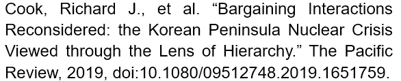
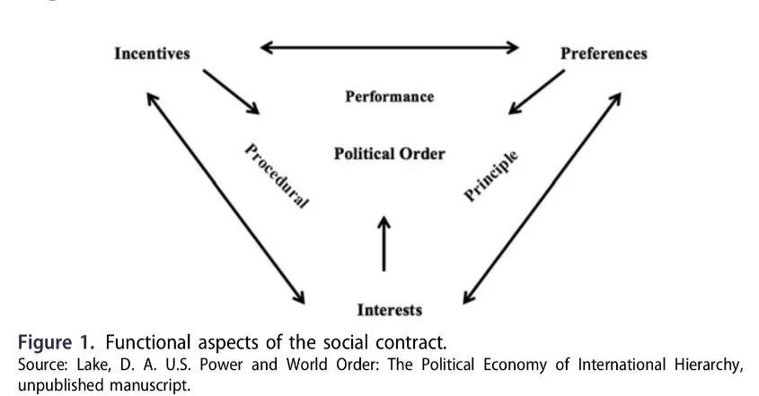
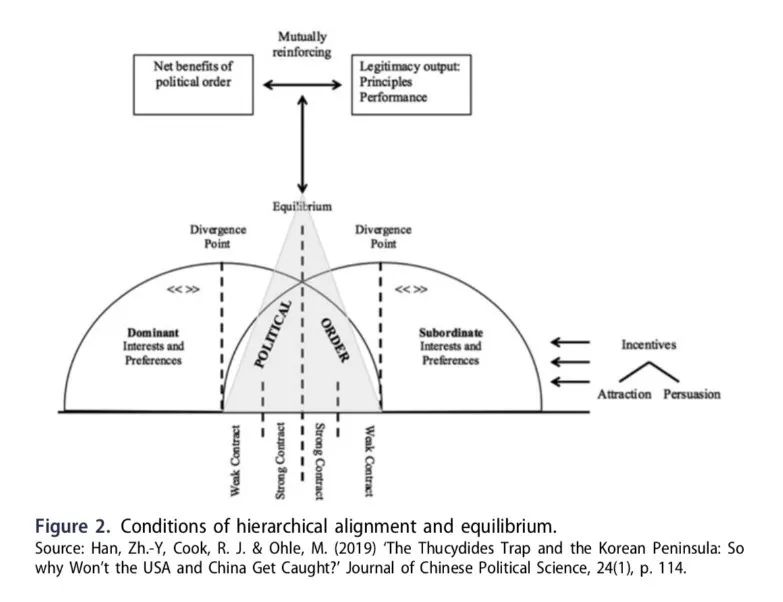
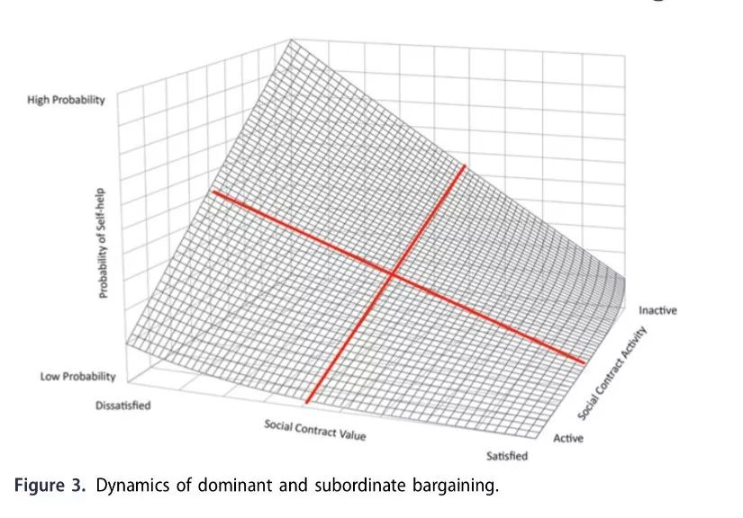

收录于合集
作品简介
【作者】
Richard J. Cook 是南开大学周恩来政府管理学院国际关系学博士候选人，他的研究兴趣包括中美关系、国际关系等级制及国际安全。 Maximilian Ohle 在南开大学周恩来政府管理学院获得国际事务和公共政策硕士学位，并被德国蒂宾根大学政治科学系国际关系学博士生录取。他的研究领域包括中俄关系、国际关系等级制和东亚国际安全。 韩召颖 ，南开大学周恩来政府管理学院国际关系学教授。他的研究领域包括中美关系、中国外交政策和国际关系理论。 【编译】 扎西旺姆（国政学人编译员，伦敦大学亚非学院） 【校对】 崔宇涵 【审校】 王川 【排版】 贺奕 【来源】
期刊介绍
The Pacific Review《太平洋评论》是太平洋地区研究的主要平台，作为跨学科期刊，其宗旨和目标为打破研究领域之间以及学术界、新闻界、政府和商界之间的障碍，重点关注政策问题。2018年该刊的影响因子为1.865。
再思交易互动：从等级视角看朝鲜半岛核危机
Bargaining interactions reconsidered: the Korean Peninsula nuclear crisis viewed through the lens of hierarchy
内容提要
行为体放弃部分主权以换取由更强行为体提供的实际保护，形成了主导- 从属的等级体系——由主导者塑造政治秩序，从属者享受该秩序的好处。本文作者认为，将这一等级体系视角应用于朝鲜半岛问题可为理解半岛核危机及思考其现今发展态势提供新选择。作者提出两个相互平行却实质不同的政治秩序：(1)美国和韩国；(2)中国和朝鲜。溯久弥今，美韩保持着积极紧密的社会契约关系，而中朝直至最近才一改其松懈被动的姿态，开始加紧社会契约互动。此外，1978年后中国的包容性行为，美国的单极时期，华盛顿释放的侵略性信号及其相应的行为，无一不迫使朝鲜再思中国作为其安全保障者的可靠性，最终导致朝核危机。
文章导读
一、导言
1950年至1953年朝鲜战争结束后签订了两项贸易协定：(1)美韩于1953年签署的《美韩共同防御条约》（Mutual Defense Treaty）；(2)中朝于1961年签署的《中朝友好合作互助条约》(Treaty of Friendship, Cooperation and Mutual Assistance)。因此， 作者认为在这一特定问题领域上出现了两个相互平行的等级秩序-在预防性维护环境中涵盖基本的安全协议。
社会契约活动被定义为对社会契约维持中等级关系的承诺程度，范围涵盖活跃到不活跃。首先是美韩两国的安全协议，尽管朝鲜的能力发生了根本性变化，美韩协议依然严格发挥维持均势和现状的作用。其次是中朝安全协议的状态。自中国转移其地缘政治重心，走上负责任的大国之路时，中国开始遵循稳健的安全原则。朝鲜则转向了自助道路（self- help），发展核武器以维持其在国际体系中的生存。
本文的分析框架如下。第一部分对现有解释朝鲜半岛地缘政治发展的经验范式进行了批判性回顾。第二部分阐述了主导国-从属国交易互动（dominant- subordinate bargaining interaction）的理论动因及其对等级体系间接触（inter-hierarchical engagement）的影响。作者在等级体系内重新评估“关系权威”（relational authority），将其作为主导国- 从属国等级体系的基础，表明各国本身便是不平等的。第三部分围绕等级体系1(美韩)和等级体系2(中朝)的双边社会契约动态进行分析。第四部分从以下几个方面反映了两国之间的等级体系间接触：(1) 各自从属国间的地缘政治竞争；(2) 自2018年以来，基于从属国-从属国互动（subordinate-to-subordinate interaction）的朝韩关系缓和。最后，文章认为承认社会契约活动是现今美朝领导人互动现状的前提。
二、朝核危机的背景
自第二次世界大战结束以来，朝鲜半岛一直是美国、苏联和中国之间大国对冲的热点。从代理人战争的视角看，由于核部署能力相对薄弱和地缘政治重心转向欧洲，苏联在仅向朝鲜提供军事援助和技术咨询、避免与美国开战的同时，也促使中国成为朝鲜的主要安全保障者。考虑到中美两大国间的接触，北京可以选择(1)支持美国提供的秩序；(2)以中国为中心的秩序取代现有秩序；(3)寻求最优利益而不付出代价。约翰·伊肯伯里(G.John Ikenberry)认为，美国希望达成的重大协议是通过在地区秩序中给予中国与其崛起相匹配的地位来换取中国接受华盛顿的核心战略利益，其中包括接受美国在东亚地区保持主导地位。
作者指出，大国与特定从属国保持着等级关系，而如何在各自的交易互动之中聚焦再协商战略，如何避免修昔底德陷阱，各自的等级秩序内的互动是关键。 美国通过巩固其在全球的联盟网络来避免大国冲突，其中包括韩国在内许多亚太地区的从属国。美国自朝鲜战争结束以来，通过积极与韩国发展社会契约，提供足够的安全激励措施，一直与其保持稳固的关系。而苏联和中国作为朝鲜的主导国，在对朝鲜的影响力方面，一直保持竞争的状态。当苏联不再是朝鲜政权的主要安全保障者后，中国接替了苏联的位置，冷战之后也是如此。因此，中国与朝鲜之间存在社会契约互动，但实际远不如美国- 韩国的情况。相反，中国一直在开展全面改革议程。随着其在政治、军事和经济上崛起，中国被视为不断挑战美国主导的世界秩序，在亚太地区尤为如此。在这样的情况下，中国已经取代了俄国，正建立一个中国为中心的区域秩序。
美国与中国的等级体系框架有实质性区别。美国一直试图塑造一个由其从属国搭建成的堡垒，其中从属国坚持美国民主、自由、人权等理想，维护美国主导的自由霸权秩序（liberal hegemonic order），从而形成一个精心设计的、以合作与合法性调和的权力与等级秩序。由于东亚从属国之间的紧张关系（主要为日韩），美国选择以双边轴辐及对话系统（hub- and-spoke system）来建立经济和安全秩序。中国塑造等级体系框架的过程多有跌宕，自古时的朝贡制度，到二战后毛主席倡导的国际主义社会，再到邓小平提出的经济开放，中国逐渐走向了包容的道路。 尽管方式有所不同，中美作为主导国都需要重视再谈判交易（renegotiation bargain），兼顾从属国的利益偏好以维系该等级体系。
三、朝鲜半岛主导国-从属国的谈判动力
从属国遵守由主导国制定的规则是维护政治秩序的基本先决条件，这种关系也体现于社会契约中，因为前者具有维持政治秩序的能力，从而使主导国对从属国的“正当统治”合法化。如图1及图2所示，当秩序符合从属国的利益、动机及偏好时，从属国也可以在不违反政治秩序的前提下，追求最大利益。这也表示主导国的权威不是绝对的。如果利益、动机及偏好不一致，或主导国和从属国的权力不平衡时，政治秩序可能会崩塌；从属国可能会寻求自助，叛逃到另一种政治秩序，或被主导国驱逐。这样的等级交易是基于不对称的关系，从属国会通过表达交易的意愿以获取最大利益。基于以上条件，作者假设政治秩序的运作与理性评估社会契约的行为体冲突，也与持续的再谈判过程冲突，以此作为确定政治秩序完整性的手段。


社会契约可以从两个维度来衡量。社会契约价值的一致性准则决定了主导国和从属国利益、偏好及动机的质性输出（ qualitativeoutput ），从 “ 满意 ” 到 “ 不满意 ”; 社会契约活动可以用步骤、原则和表现的特征来评估，从 “ 活跃 ” 到 “ 不活跃 ” 。 由此可得出社会契约评估的四个总状态：（1）活跃-满意；（2）活跃-不满意；（3）不活跃-满意；（4）不活跃- 不满意。（1）如果主导国及从属国对社会契约感到满意，并积极持续地进行再谈判，双方都不会选择寻求自助。（2）如果双方对社会契约价值感到不满意，但拿出充足的行动重新协商社会契约，任意一方寻求自助的可能性也相对较低。（3）相似地，如果双方对于结果感到满意，并保持不活跃的接触关系时，寻求自助的可能性也较低。（4）从属国对社会契约价值不满意，而谈判行为又不充分时，从属国寻求自助的可能性较大，可能导致社会契约弱化，等级体系制度松散，甚至失去等级关系，最终导致从属国叛逃。

朝鲜半岛为等级状态提供了充分的适用范围，因为中美两国都有效地被限制于各自的权力集团中，而这些集团现在由扮演从属国角色的各种行为体组成。 从最近的朝核问题升级，关于朝鲜展示其作为独立核威慑主张的论调，以及中美关系间日益增加的地缘政治挑战可以看出，朝鲜半岛成为了两个大国集团在地缘战略利益和地区优势方面摩拳擦掌的前线。
四、等级体系内部：等级体系1—美韩关系
自1953年停战以来，美韩便开始系统地增加多种有利于双方的安全利益。这都基于：（1）确保韩国的安全；（2）出于亚太地区地缘政治的考虑，确保美国为朝鲜半岛的主导战略参与者。除了不断扩大军工复合体以增强美国霸主的硬实力外，军事力量的增强和核威慑保护伞的发展为韩国提供了重要的安全保障，这是美国对韩国多次积极参与军事演习并扩大其军事能力的回馈。在看到朝鲜发展核武器之后，美国这一意愿进一步加深。韩国决策者也不断意识到获得适当保护的必要性。然而早在韩国处于核武器项目初期之时，美国便利用了其全球的等级网络与权威，封锁韩国，使其无法获得多种核武器组件。 总的来说，在美国常规武器和核实力的保护下，主导国为韩国提供的安全保障已经足够，韩国基本无动力发展本国的核武器计划。
美韩之间利益、动机及偏好的趋同是显而易见的。 美国为了保持其在亚太地区的优势地位，不得不维持其与韩国的等级关系。 这样的组合既可以使双方受益于(1) 共同的安全承诺：相对于中国领导的等级制度，尤其是朝鲜政权而言；(2)经济上的相互依存关系，以促进韩国的经济发展。 反之亦然，反复出现的摩擦是等级关系中固有的迹象，表明需要不断地再次谈判讨价还价。面对影响各自国家安全状态的朝核威胁，可以观察到美韩之间的利益及偏好的高度一致。朝鲜和美国目前的核僵局确实敦促韩国继续致力于全面参与冲突解决，以减少与朝发生军事冲突的可能性。
五、等级体系内部：等级体系2—中朝关系
朝鲜的安全责任从苏联转向中国突出体现了两个方面：(1)净利益的偏离；(2)苏联无法履行其政治秩序涵盖的义务。 核部署实力及一次打击能力（first- strike capability）的相对弱势，地缘政治聚焦中心的转移都令苏联缩减了为朝鲜提供的安全保障，甚至将主要或直接的安全责任转移至中国。 在新安全交易的基础上，朝鲜战争开启了中朝之间的等级关系；1953年停战后，中朝正式结盟。这一初步发展为朝鲜提供安全保障和启动中朝政治秩序奠定了基础。同为社会主义国家，共同的意识形态纽带为利益、动机及偏好的一致性提供了基础，与安全局势相融合，启动了社会契约，从而建立了中朝之间的政治秩序。 然而在苏联减少经济援助，中国文化大革命，韩国发展核武器以及美国总统尼克松访华等一系列事件之后，朝鲜选择(至少在理论上)在经济和军事上独立，提出了主体思想（Juche）和先军政策(Songun policy)。
中国在1978年之后开始改革开放，发展“中国特色社会主义”及市场经济。与此同时，中国在对朝社会利益的立场保持不变，与朝方进行了一次不理想的谈判，这可以被看作是说服朝鲜采取类似做法的一种努力。然而，朝鲜坚持明确的政治决定，即不希望追随其主导国的经济开放战略。冷战后，国际政治环境剧变，朝鲜愈发举步维艰。失去苏联作为其主要意识形态、军事和经济支持者，加上中国日益具有包容性的立场和融入国际市场经济体系的信号，都表明提供安全保障的主导国也不再可靠，朝鲜的安全状况恶化。 随后中韩正式建立外交关系，美国单极时期的军事霸权和干预主义倾向以及中国不断国际化的姿态都让核威慑愿景对朝鲜愈发具有吸引力，并使其确信中朝社会契约进一步萎靡，寻求自助才是唯一可行的选项。
中国没有与朝鲜再次对社会契约进行谈判，而是试图通过支持联合国安全理事会实施制裁来约束其从属国，但中朝关系中的等级秩序因素已经少到令等级秩序极其松散的状况。 中国保持了与朝鲜的经济联结，与朝鲜不断发展实质性的双边贸易伙伴关系。近些年来，中朝两国领导人的更替带来了形势变化。金正恩提出并进政策（Byungjin policy），开始推进核武器和经济增长的并行发展。自2018年，朝鲜也更加积极地参与外交对话，释放出与美对话，与韩交好的信号。中朝两方也致力于为社会契约重新注入活力。拥有核武器及推进经济发展令朝鲜在与中国再次协商交易时处于一个更有利的位置。
六、等级体系之间：中美两国的主要分歧与差距
中美两国作为这些平行等级体系的主导国，通过决定主要的政治行动方向，在朝鲜半岛的冲突管理中发挥着至关重要的作用。 中美都在不断重新评估接触战略， 平衡彼此间经济依赖和安全顾虑的关系，安全和经济顾虑成为了彼此在特定领域分歧的基石。准确地说，是指以下几个领域：(1)朝鲜拥核化；(2)萨德系统；(3)对朝鲜的经济制裁；(4)中朝贸易关系 。六方会谈旨在解决等级体系间以及中朝等级体系内的紧张关系。 作者认为，尽管朝鲜对于本国政权更迭的担忧不断加重，考虑到朝鲜在六方会谈中的外交立场，获得拥核国家地位是其进行谈判的最佳举措，这一举措能塑造新的威慑姿态。 中国的立场表明，意识形态并不是关键问题，但其对朝鲜政权垮台的可能性及朝鲜国内权力争夺战所带来的高风险军事冒险主义的前景非常担忧。与代价高昂的军事手段不同，对朝鲜的经济制裁作为常用手段，目的是通过限制其与其他国家和行为者的经济活动来改变其行为。潜在军事选项表明，无论制裁多严厉，都没有达到预期效果，因为朝鲜已处于“制裁免疫”（sanction immunity）的状态。尽管如此，中国还是投票赞成了制裁朝鲜的立场，以使自己免受国际社会的批评，承担了作为一个负责任大国的成本。 作者认为，眼下对中国而言，维持一个脆弱的社会契约比将其从属国完全从政治秩序中驱逐出去要好。
考虑到上述情况，韩国发挥了矛盾性的作用，在美国提供的安全保障和与中国的经济交流之间摇摆。 传统的观念中，等级体系框架内的从属国是温和顺从的行为者。但与传统观念不同，韩国一直鼓励美国改变其行为，这有利于双方进一步接触。同时韩朝之间从属- 从属的互动形成了进一步缓和紧张关系的外交途径， 这种微观层次的谈判互动也降低了主导国在宏观层次的谈判互动中的观众成本，利于加强信号传递。
七、首脑会议及利益分歧
作者认为，在法律条文意义上结束朝鲜战争，或者美国保证不会入侵或试图推翻朝鲜政权，这都是获得某种形式信任的重要的第一步。 去核化的前景仍然是不明朗的，美朝在峰会中的立场也阐明了彼此不一致的政策利益。即使达成了一项乐观的协议，朝鲜仍将以隐匿核威慑的形式保留重要的威慑能力，即核延迟（nuclear latency）。从等级体系框架的角度解决冲突也存在诸多实际问题。譬如，中国严格坚持不干预政策，因此无法为朝鲜提供切实的安全保障，并且朝鲜已经成功实现拥有足够部署能力的核武器。由于朝鲜新战略路线的启动，再次谈判和社会契约活动可以通过朝鲜不断发展的经济利益获得更多重视。等级体系视角为评估危机提供了全面灵活的选择，因为等级体系本身便是国家对危机的看法。
**_本文由国政学人独家编译推荐_**
扫下方二维码查看往期精彩
【新刊速递】第01期 | Review of International Studies Vol.45, No.4, 2019
【新刊速递】第02期 | International Relations Vol.33, No.3, 2019
【新刊速递】第03期 | International Organization Vol.73, No.3, 2019
分类导览 1

分类导览 2
点“在看”给我一朵小黄花